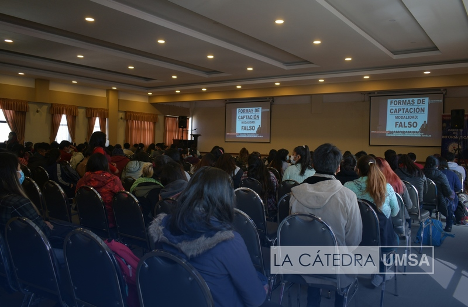
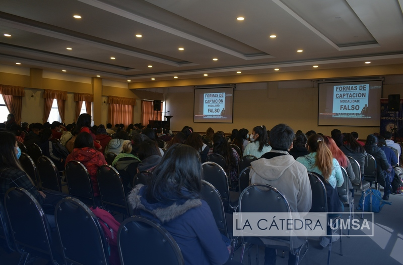

JORGE URIEL COCA QUISBERT
UNIVERSIDAD MAYOR DE SAN ANDREAS
 

Breve historia
Carrera de Informática en la UMSA La carrera de Informática en la UMSA se estableció como respuesta a la creciente necesidad de profesionales en el campo de la tecnología de la información. A medida que Bolivia comenzaba a experimentar un proceso de modernización y digitalización, se hizo evidente la importancia de contar con expertos en sistemas computacionales. Objetivos de la Carrera Los principales objetivos de la carrera de Informática son: Formación Integral: Proporcionar a los estudiantes conocimientos teóricos y prácticos en áreas como programación, desarrollo de software, administración de bases de datos, redes, inteligencia artificial y seguridad informática. Investigación y Desarrollo: Fomentar la investigación en el ámbito tecnológico, promoviendo proyectos que busquen resolver problemas locales y contribuir al avance de la tecnología en el país. Ética Profesional: Educar a los estudiantes en el uso responsable y ético de la tecnología, resaltando la importancia de la privacidad, la seguridad de la información y el impacto social de las tecnologías. Adaptación al Mercado: Actualizar continuamente la malla curricular para alinearse con las tendencias del mercado laboral y las necesidades de la industria tecnológica, incluyendo la incorporación de metodologías ágiles y herramientas modernas. Currículo y Formación El currículo de la carrera está diseñado para ofrecer una sólida base en matemáticas, lógica y programación, así como en aspectos prácticos del desarrollo de software. Los estudiantes tienen la oportunidad de participar en proyectos reales, lo que les permite aplicar lo aprendido en situaciones concretas. Además, la carrera fomenta la participación en concursos y ferias tecnológicas, donde los estudiantes pueden presentar sus proyectos y establecer contactos con profesionales del sector. Proyecciones Futuras La UMSA y su carrera de Informática enfrentan el desafío de adaptarse a un mundo en constante cambio. Con el avance de tecnologías como la inteligencia artificial, el big data y el Internet de las cosas (IoT), es fundamental que la currícula evolucione para preparar a los estudiantes ante estos nuevos desafíos.
UMSA
La sede central de la Universidad Mayor de San Andrés (UMSA) se encuentra en La Paz, Bolivia.
Ir a la pagina oficialCARRERA DE INFROMATICA
Localizada en el segundo patio de Monoblock se encuentra en La Paz, Bolivia.
Ir a la pagina oficialPreguntas frecuentes
¿Cuál es el proceso de admisión a la UMSA?
El proceso de admisión incluye varios pasos, comenzando con la presentación de una solicitud que debe incluir documentos como el certificado de bachillerato, cédula de identidad y fotos. Además, es importante estar atento a las fechas de inscripción y a los requisitos específicos de cada carrera. La UMSA realiza un examen de admisión para algunas facultades, así que es crucial prepararse adecuadamente.
¡Gracias por preguntar!
¿Cuáles son las carreras que ofrece la UMSA?
La UMSA cuenta con una amplia variedad de programas académicos distribuidos en distintas facultades, como Derecho, Medicina, Ciencias Económicas, Ingeniería, Arquitectura, y muchas más. Cada facultad tiene su propio enfoque y especializaciones, lo que permite a los estudiantes elegir carreras que se alineen con sus intereses y objetivos profesionales.
¡Gracias por preguntar!
¿Cómo se estructura el plan de estudios en cada carrera?
Cada carrera tiene un plan de estudios diseñado para proporcionar una formación integral. Generalmente, se divide en ciclos o semestres que incluyen materias obligatorias y electivas. Las materias abarcan tanto teoría como práctica, y muchos programas incluyen proyectos finales, pasantías o prácticas profesionales que permiten aplicar los conocimientos adquiridos en un entorno real.
¡Gracias por preguntar!